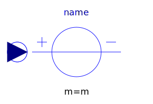
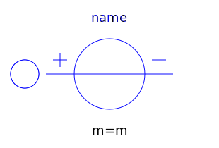
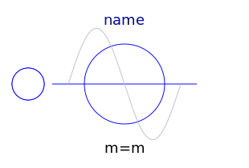
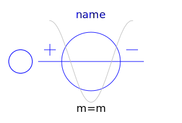
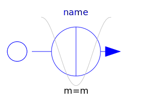

This package contains time-dependent and controlled multiphase voltage and current sources:
| Name | Description |
|---|---|
|  SignalVoltage | Multiphase signal voltage source |
|  ConstantVoltage | Multiphase constant voltage source |
|  SineVoltage | Multiphase sine voltage source |
|  CosineVoltage | Multiphase cosine voltage source |
| Multiphase signal current source | |
| Multiphase constant current source | |
| Multiphase sine current source | |
|  CosineCurrent | Multiphase cosine current source |